library("ggplot2")
ggplot(hood) +
aes(x = time, y = temp_f) +
geom_line()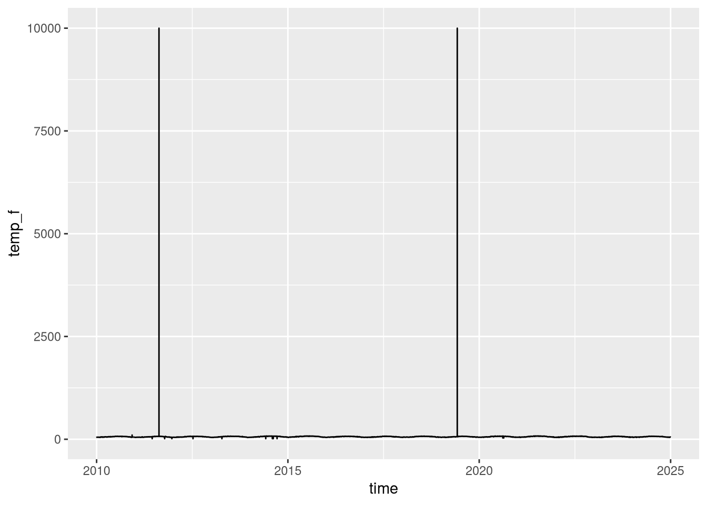
After this lesson, you should be able to:
This chapter uses the following R packages:
For a refresher about how to install and load packages, see the Packages section of DataLab’s R Basics workshop reader.
This chapter introduces the fundamentals of time series analysis. Time series analysis is a deep topic and remains an area of active research, so this chapter should not be considered comprehensive by any means.
There are many different packages and data structures for representing time series in R. A few of these include:
?ts)?msts)?tsibble)?zoo and ?zooreg)?xts)Unfortunately, these representations are mostly incompatible with each other (but see the tsbox package, which provides conversion functions). Which representations are supported by methods packages varies.
In this reader, we mostly use tsibble (and associated packages) to so that learners can easily refer to the textbook Forecasting: Principles and Practice, 3rd Edition (Hyndman and Athanasopoulos 2021). We’ve found that tsibbles lead to the nicest visualizations (with good ggplot2 support) and are also the most convenient for time series with multiple features (sometimes called multivariate time series or panel data).
We may occasionally use forecast as well. It’s an older package from several of the same developers as tsibble; visualizations aside, it generally has more features, better performance, and fewer bugs. The textbook Forecasting: Principles and Practice, 2nd Editon (Hyndman and Athanasopoulos 2018) provides an introduction to the forecast package.
The CRAN Task View: Time Series Analysis page is a curated list of R’s most prominent time series packages.
The Time Series Analysis chapter of the R Cookbook (Long and Teetor 2019) discusses the tradeoffs of R’s many time series data structures (and recommends zoo or xts for most purposes). It also provides examples of several common time series analysis tasks.
As with any dataset, the first step in working with a time series is to clean it. Specifically, we need to:
Identify outliers. Later in this section, we’ll explain some strategies tailored to time series, but most general-purpose strategies (Chapter 4) are also appropriate. If there are outliers, we need to investigate further to decide whether they’re valid (and should be left as-is) or erroneous (and should be corrected or removed).
Check for missing values. If there are missing values, determine how many and whether they exhibit any patterns. We’ll introduce a few ways to impute missing values later in this section.
Check whether the series is regular, meaning the interval of time between each pair of consecutive observations is the same. A series that’s not regular is irregular. Many time series methods assume regularity, so working with an irregular series is often difficult. Fortunately, there are several ways to regularize an irregular series, such as “rounding” times, aggregating to a coarser timescale, or interpolating the missing “observations” on a regular grid.
Check for “gaps” in the series. This is related to checking for missing values and regularity, but gaps can also arise due to missing observations (that is, observations which are not present in the dataset). When a series has a long interval with relatively few or no observations, it may be better to treat it as two separate series. Consider whether each (separate) part of the series contains uniquely important information relevant to the analysis. For forecasting, we often focus the most on relatively recent observations.
To illustrate some of these points, let’s clean the Sacramento Water Temperature dataset (Section 10.2). To check for outliers, let’s start by visualizing the dataset. For time series, it’s natural to make point or line plots of numerical features against time. In this dataset, the only numerical feature is temp_f, the water temperature in degrees Fahrenheit:
library("ggplot2")
ggplot(hood) +
aes(x = time, y = temp_f) +
geom_line()
The most striking thing in Figure 11.1 is that at least two of the temperatures are close to 10,000! These are clearly either erroneous or meant to indicate the the actual measurement is missing.
It’s reasonable to expect that the water temperature will never be below freezing (32°F; it’s extremely rare for the Sacramento River to freeze) or above boiling (212°F). Let’s check how many observations are outside these bounds:
library("dplyr")
print(filter(hood, temp_f < 32 | temp_f > 212), n = 30)# A tibble: 24 × 2
time temp_f
<dttm> <dbl>
1 2011-06-15 14:00:00 14
2 2011-08-19 12:00:00 9999
3 2011-10-12 13:00:00 14
4 2011-12-20 11:00:00 14
5 2012-07-09 05:00:00 14
6 2012-07-09 06:00:00 14
7 2012-07-09 07:00:00 14
8 2012-07-09 08:00:00 14
9 2012-07-09 09:00:00 14
10 2013-04-11 00:00:00 14
11 2013-04-11 01:00:00 14
12 2013-04-11 02:00:00 14
13 2013-04-11 03:00:00 14
14 2013-04-11 04:00:00 14
15 2013-04-11 05:00:00 14
16 2013-04-11 06:00:00 14
17 2013-04-11 07:00:00 14
18 2013-04-11 08:00:00 14
19 2014-06-03 14:00:00 14
20 2014-08-05 12:00:00 14
21 2014-08-14 05:00:00 14
22 2014-09-19 13:00:00 14
23 2019-06-05 14:00:00 9999
24 2019-06-05 15:00:00 9999All of these are either 14 or 9,999. Both seem unlikely to be valid measurements, so let’s replace these with missing values, then replot the series:
hood$temp_f[hood$temp_f < 32 | hood$temp_f > 212] = NA
ggplot(hood) +
aes(x = time, y = temp_f) +
geom_line()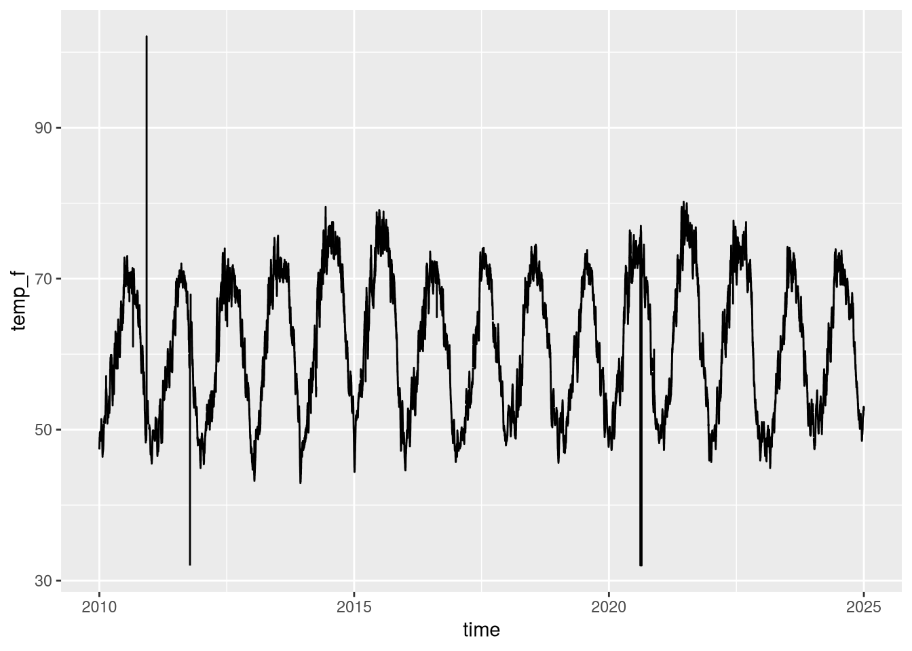
Figure 11.2 shows there is a strong, wavelike pattern to the temperatures over time. This likely reflects changes in season. There are still about three observations that seem to deviate substantially from the others; their values are extremely unlikely but not impossible, so we’ll leave them as-is for now. The figure also shows that there are no major gaps in the series.
Next, let’s check whether the series is regular. To do this, we’ll use the tsibble package, which provides a Tidyverse-compatible data structure for time series: a “time series tibble” or tsibble. To convert the data frame, we can use the tsibble function; we also need to specify which feature is the time index for the series:
library("tsibble")
Attaching package: 'tsibble'The following objects are masked from 'package:base':
intersect, setdiff, unionhood = tsibble(hood, index = time)After converting the series, we can use the scan_gaps function to identify missing observations (and gaps):
scan_gaps(hood)# A tsibble: 15 x 1 [1h] <UTC>
time
<dttm>
1 2010-03-14 02:00:00
2 2011-03-13 02:00:00
3 2012-03-11 02:00:00
4 2013-03-10 02:00:00
5 2014-03-09 02:00:00
6 2015-03-08 02:00:00
7 2016-03-13 02:00:00
8 2017-03-12 02:00:00
9 2018-03-11 02:00:00
10 2019-03-10 02:00:00
11 2020-03-08 02:00:00
12 2021-03-14 02:00:00
13 2022-03-13 02:00:00
14 2023-03-12 02:00:00
15 2024-03-10 02:00:00The series is mostly regular, but there are 15 times for which there’s no observation. We can use tsibble’s fill_gaps function to insert observations at these times (with missing values for the features):
hood = fill_gaps(hood)Another way to check regularity is to compute differences between observation times with R’s built in diff function. In a regular series, the differences will all be equal.
Another way to insert missing observations is to use seq to create a regular sequence of times, then use merge or dplyr’s left_join to left join the sequence with the time series.
Finally, let’s check for missing values in the time series:
summary(hood) time temp_f
Min. :2010-01-01 00:00:00 Min. : 32.00
1st Qu.:2013-10-01 17:45:00 1st Qu.: 53.00
Median :2017-07-02 11:30:00 Median : 61.30
Mean :2017-07-02 11:30:00 Mean : 61.21
3rd Qu.:2021-04-02 05:15:00 3rd Qu.: 69.70
Max. :2024-12-31 23:00:00 Max. :102.10
NA's :696 There are 696 missing values (39 of which we created) out of 131496 observations. Let’s create a new column to mark the observations where temperature is missing:
hood$na_temp = is.na(hood$temp_f)Since temperature is only missing for a small proportion of observations, let’s impute the missing values. There are many different ways to do this. For instance, we can propagate prior non-missing values forward, aggregate the nearest non-missing values, or fit a model to the non-missing values and use its predictions.
The forecast package’s na.interp function can impute missing values in a vector or time series by linear interpolation:
library("forecast")
hood$temp_f = as.numeric(na.interp(hood$temp_f, linear = TRUE))The argument linear = TRUE makes the function use linear interpolation; it can also impute values by time series decomposition (more about this in Section 11.3). The function returns a ts object, so we also need to convert it back to a vector with as.numeric.
Now that we’ve imputed the missing values, we can plot the series one more time with the imputed values marked. This is one way to check for patterns in (the former) missing values:
ggplot(hood) +
aes(x = time, y = temp_f) +
geom_line() +
geom_point(data = filter(hood, na_temp), color = "red", size = 0.1)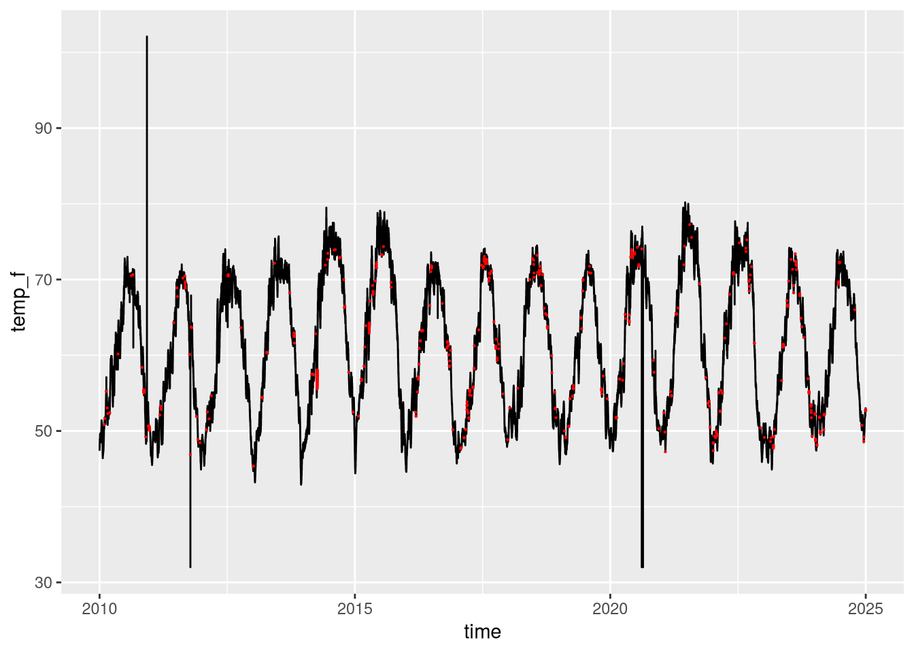
Based on Figure 11.3, the former missing values are relatively spread out across the series. There appear to be a few clusters of missing values, which could indicate a multi-hour sensor failure. We’ll proceed with the imputed values. In practice, we should carry out further investigation of the missing values to look for patterns, identify potential causes, and evaluate how they might influence subsequent analyses. However, since the number of missing values was small, and this series includes a large number of observations, they’re unlikely to have much impact.
Many time series can be decomposed into meaningful components:
A trend component: a smooth curve that follows long-term increases and decreases in the series. Some time series also exhibit long-term cycles: patterns of increases and decreases over irregular lengths of time. When a series has cycles, we call this a trend-cycle component.
One or more seasonal components: a curve which follows increases and decreases that repeat over a fixed (or regular) length of time. We call the fixed length of time a seasonal period or simply a season. There can be multiple seasonal components with different season lengths—we’ll see an example of this shortly.
A remainder component: the variation in the observations that’s left over after removing the trend and seasonal components. Generally, we want this component to be devoid of any trends, cycles, or seasonal patterns.
There are many different methods for decomposing time series.
As a first step towards decomposition, let’s make a seasonality plot. In a seasonality plot, we split the time series into subseries by season, align each subseries to the same starting time, and then make a time versus feature plot with a separate line for each subseries. The idea is that any seasonal patterns will be visible in the plot as similarities between in the subseries.
The ggtime package provides functions to make seasonality plots for tsibbles. It also provides functions for other kinds of time series visualizations. The package is relatively new as of writing, so there are some missing features and bugs.
The ggtime function to make a seasonality plot is gg_season. The function requires three arguments: a tsibble, the name of the feature to plot on the y-axis, and the seasonal period. See ?gg_season for details about how to set the seasonal period; stricly speaking, this argument is optional, but it’s usually best to specify it.
Let’s make a seasonality plot where the seasonal period is one year for the Sacramento River Water Temperature series:
library("ggtime")
gg_season(hood, temp_f, "1y")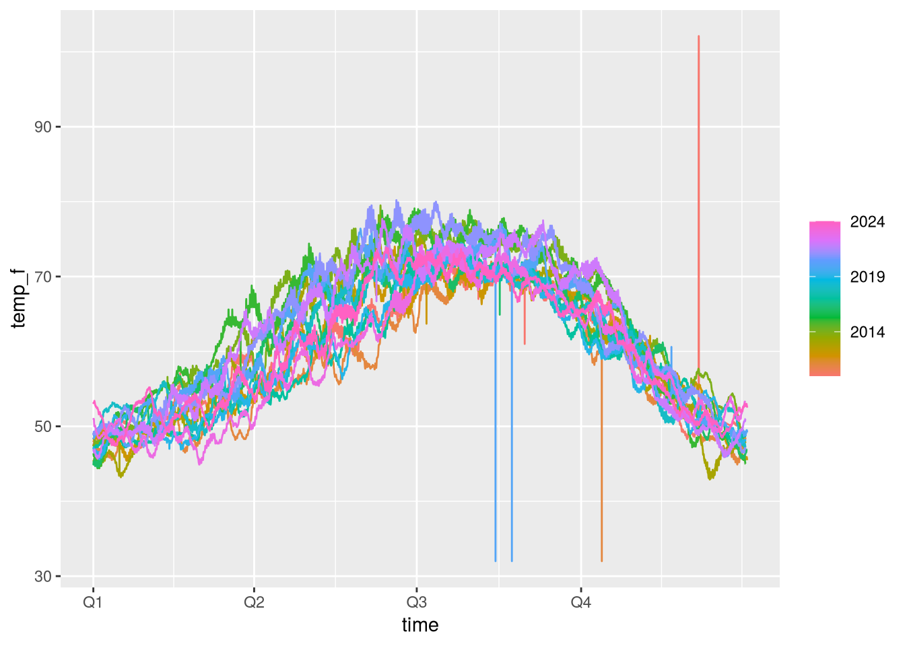
There’s a clear pattern visible in Figure 11.4. At the beginning of the year, in Winter, temperatures are relatively low (about 50°F). They gradually increase over time until the peak in Summer (about 70°F). Then they gradually decrease as Winter approaches again. So this series has strong seasonality at the 1-year level; any decomposition we make should include a 1-year seasonal component.
It’s up to us to determine appropriate seasonal period(s) for a time series (although some functions will try to guess). In general, we should check the seasonality plots for any seasonal periods that we suspect might exhibit a pattern, regardless of whether that’s because we have expert knowledege about the processes that affect the series or because we see signs of the pattern in the initial time versus feature plots.
Let’s check the 1-month and 1-week seasonality plots:
gg_season(hood, temp_f, "1m")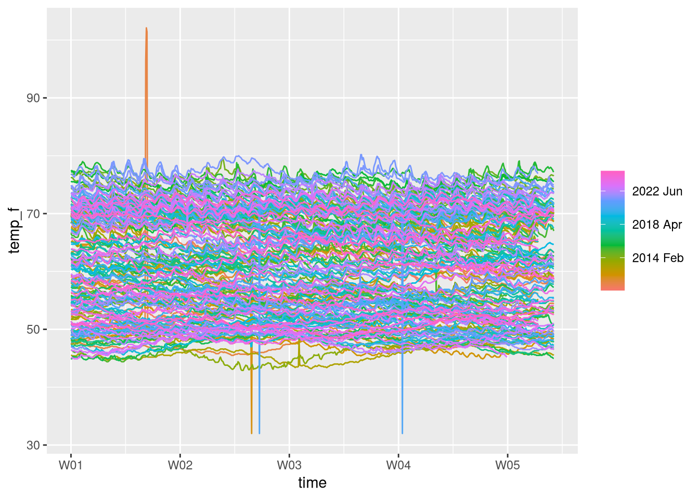
In Figure 11.5, it’s much harder to see a clear pattern than it was in Figure 11.4. One notable pattern is that there are small bumps over the course of the entire month; these suggest there might be seasonality over a shorter seasonal period.
gg_season(hood, temp_f, "1w")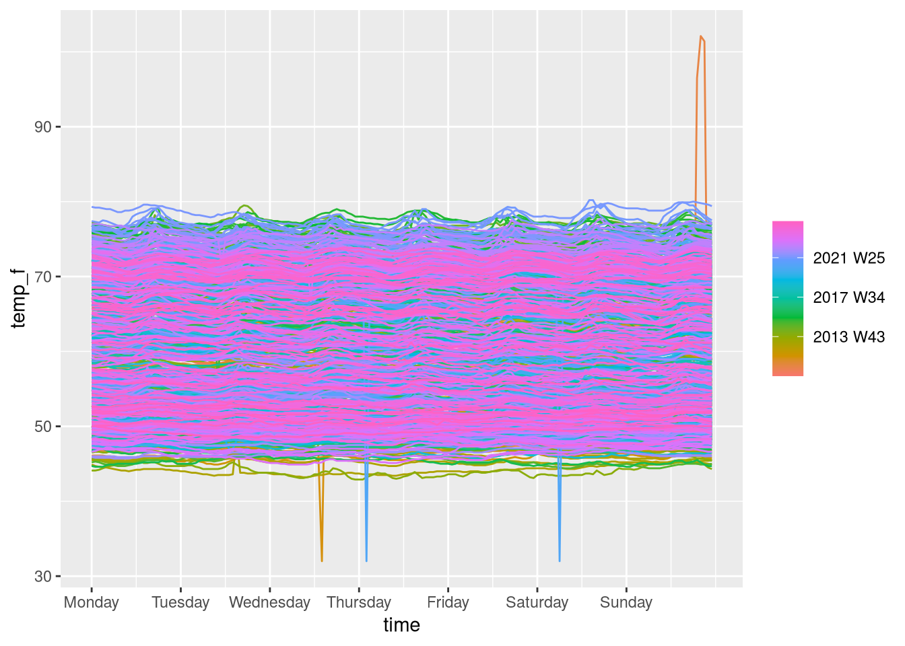
Figure 11.6 doesn’t exhibit any strong week-level patterns, but once again there are small bumps. They appear to correspond to days (there are seven bumps), so let’s check the 1-day seasonality plot:
gg_season(hood, temp_f, "1d")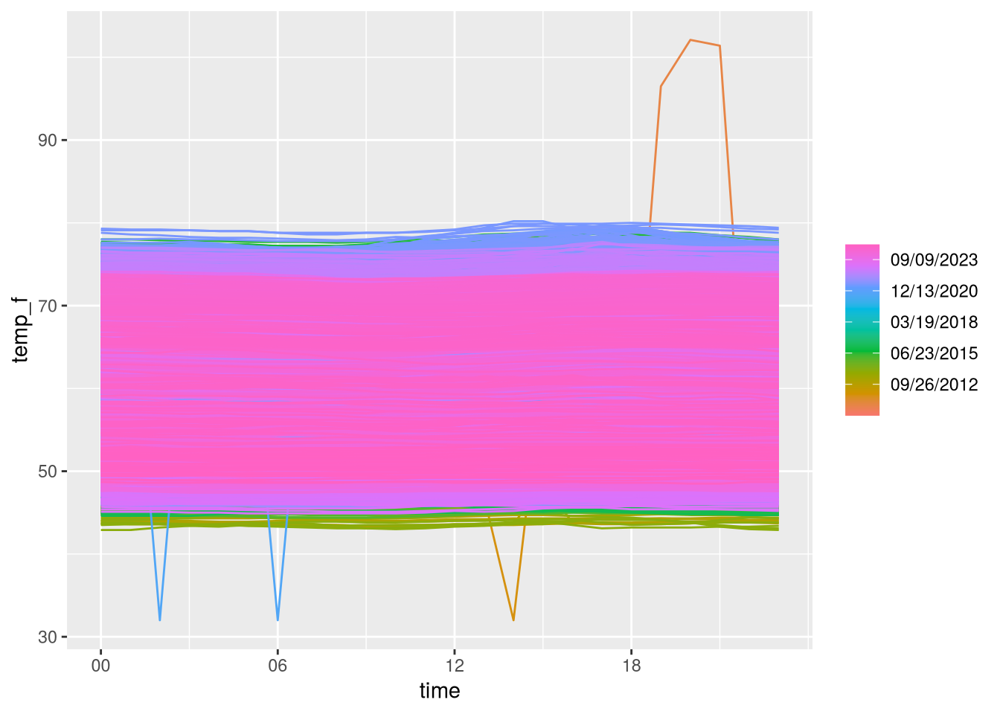
The annual seasonality we saw in Figure 11.4 makes it quite difficult to see patterns in the 1-day seasonality plot in Figure 11.7. The 1-day seasonality was easier to see in Figure 11.6. Based on what we know about earth, it seems likely that temperatures increase during the day and decrease at night.
After reviewing the seasonality plots for the Sacramento River Water Temperature series, we can conclude that there are seasonal effects at the 1-year and 1-day level. When we decompose the series, we should compute seasonal components at both of these levels.
The ggtime package’s autoplot function is a convenient way to make a time versus feature plot for a tsibble:
autoplot(hood, temp_f)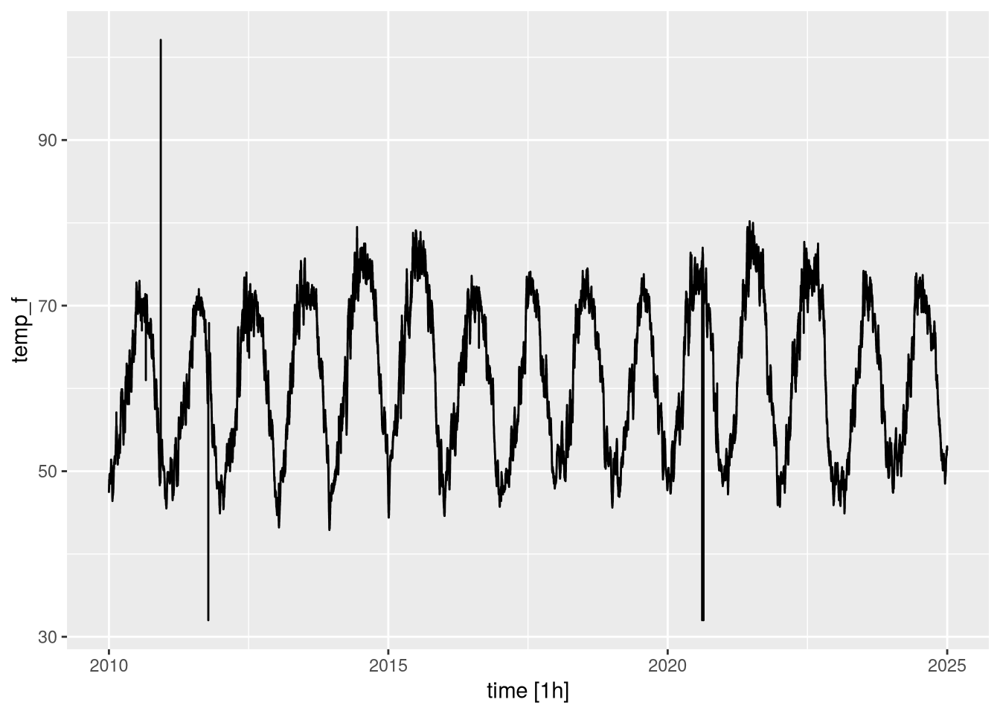
This is the same as Figure 11.2, but the code is much more concise. The autoplot function returns an ordinary ggplot2 object, so we can still add layers to customize the plot.
The Seasonal-Trend Decomposition Procedure Based on LOESS (Cleveland et al. 1990), commonly known as STL, is a very effective method for decomposing time series. An STL decomposition provides numerical estimates of the trend and seasonal components for a series.
The core of STL is a 2-step process:
These steps are repeated many times, starting from an initial trend component of 0 (no trend). STL uses LOESS (“locally estimated scatterplot smoothing”), a kind of local polynomial regression, to fit each component. Local polynomial regression approximates a smooth curve by fitting a polynomial (via least squares) at each point where the curve is to be evaluated. STL also uses some additional steps to handle spikes in series robustly; see Cleveland et al. (1990) for details.
In R, the feasts package provides an implementation of STL that works with tsibbles. To fit an STL decomposition, we can use the package’s model function, which is a generic interface for fitting models. The first argument must be the time series to decompose. The second argument must be a model description.
For an STL decomposition, we can use the STL function to write the model description. The function’s only required argument is a model formula, written with ~, which describes the decomposition. The left-hand side should be the feature to decompose. On the right-hand side, we can use the trend and season functions to describe which components to extract.
An STL decomposition always includes a trend component, so we can omit the trend function in the model description unless we want to set parameters related to the trend.
See ?STL for more details.
As a demonstration, let’s apply STL decomposition to the Sacramento River Water Temperature series. We’ll extract seasonal components at the 1-year and 1-day level, since we saw patterns there in Section 11.3.1. The code to fit the STL decomposition is:
library("feasts")Loading required package: fabletoolsstl_fit = model(
hood,
STL(
temp_f ~ season("1y") + season("1d"),
robust = TRUE # make fit robust against outliers
)
)After fitting an STL decomposition, we’ll generally want to inspect or use the individual components. We can get the components as a tsibble with the components function:
stl_cmp = components(stl_fit)
stl_cmp# A dable: 131,496 x 8 [1h] <UTC>
# Key: .model [1]
# : temp_f = trend + season_1y + season_1d + remainder
.model time temp_f trend season_1d season_1y remainder
<chr> <dttm> <dbl> <dbl> <dbl> <dbl> <dbl>
1 "STL(temp_f ~… 2010-01-01 00:00:00 47.4 60.4 -0.172 -13.6 0.712
2 "STL(temp_f ~… 2010-01-01 01:00:00 47.6 60.4 -0.176 -13.6 0.916
3 "STL(temp_f ~… 2010-01-01 02:00:00 47.5 60.4 -0.109 -13.6 0.783
4 "STL(temp_f ~… 2010-01-01 03:00:00 47.6 60.4 -0.0554 -13.6 0.831
5 "STL(temp_f ~… 2010-01-01 04:00:00 47.7 60.4 -0.0138 -13.6 0.880
6 "STL(temp_f ~… 2010-01-01 05:00:00 47.7 60.4 0.0141 -13.6 0.891
7 "STL(temp_f ~… 2010-01-01 06:00:00 47.7 60.4 0.0112 -13.6 0.903
8 "STL(temp_f ~… 2010-01-01 07:00:00 47.7 60.4 0.0107 -13.6 0.888
9 "STL(temp_f ~… 2010-01-01 08:00:00 47.7 60.4 -0.0162 -13.6 0.918
10 "STL(temp_f ~… 2010-01-01 09:00:00 47.7 60.4 -0.0300 -13.6 0.915
# ℹ 131,486 more rows
# ℹ 1 more variable: season_adjust <dbl>The result includes columns for the original series, the trend component (trend), each seasonal component (season_*), and the remainder (remainder) after removing the trend and seasonal components from the series. It also includes a column for the seasonally adjusted series (season_adjust), which is the series with only the seasonal components removed. The seasonally adjusted series is useful when we’re only interested in trend or want to use a forecasting method that assumes no seasonality.
The best way to inspect an STL decomposition is by plotting it. The ggtime package’s autoplot function automatically makes a per-component plot for STL components:
autoplot(stl_cmp)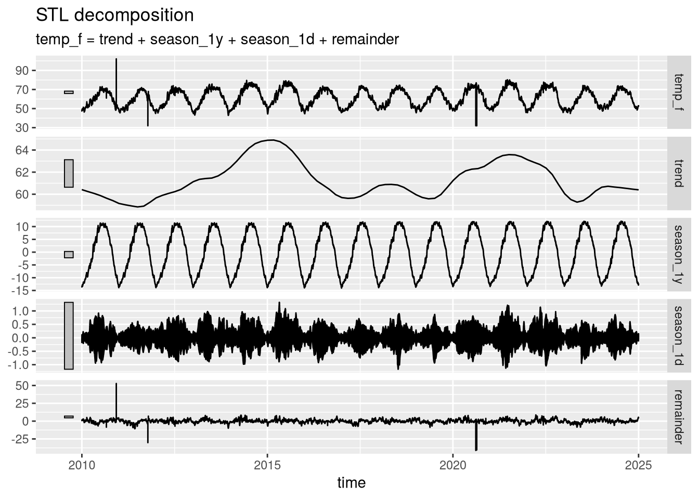
From top to bottom, Figure 11.8 shows the original series, the trend component, the seasonal components, and the remainder. At the left-hand side of each panel, a gray bar shows the relative scale of the component: each gray bar has the same height in the units of the original time series.
The STL decomposition for the Sacramento River Water Temperature series shows a mostly flat trend (compare the heights of the gray bars in the panel for the original series and the trend component). The 1-year seasonal component has a parabolic shape, similar to the pattern in Figure 11.4.
By default, STL allows seasonal components to change slowly from one season to the next. Figure 11.8 suggests that this has caused some of the 1-year seasonal component to leak into the 1-day seasonal component—notice how the peaks in the 1-year and 1-day seasonal components are similar. The 1-day seasonal component also appears as a filled area instead of a curve because it fluctuates over hours, but the plot is on the scale of years. We can plot the 1-day component separately over a shorter time interval, say the first week of January 2024, to make patterns easier to see:
library("lubridate")
# Limit from 2024-01-01 to 2024-01-07.
lims = make_datetime(year = 2024, month = 1, day = c(1, 7))
autoplot(stl_cmp, season_1d) +
xlim(lims)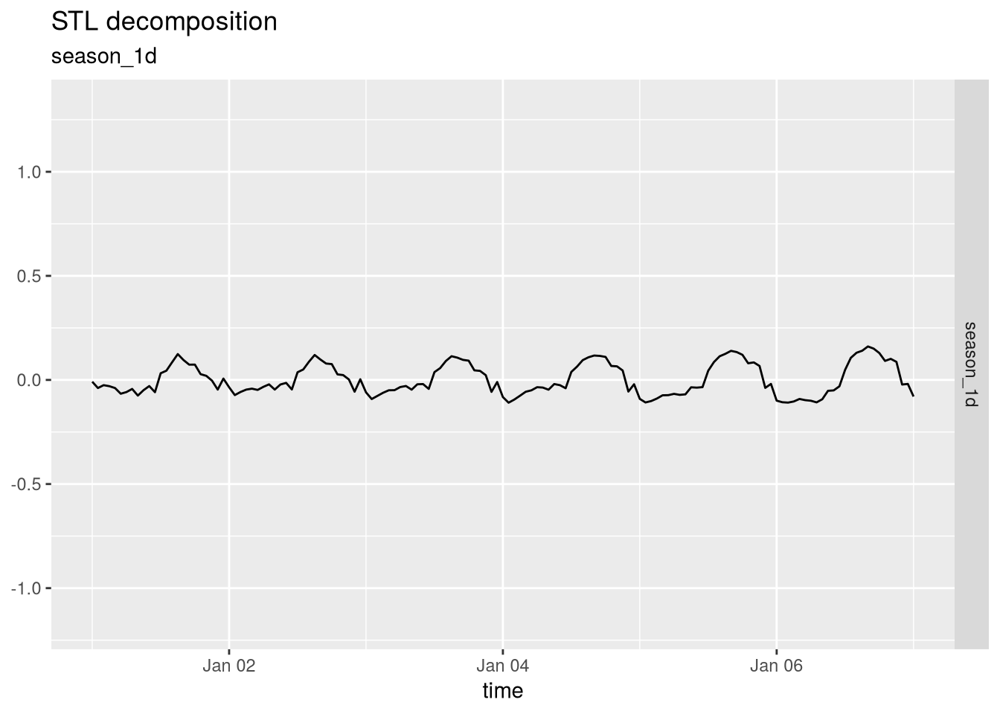
Figure 11.9 reveals the pattern for each day and also shows how it’s slowly changing.
The ggplot2 package sometimes converts datetimes into dates, which can make hourly plots like Figure 11.9 visually misleading.
One way to ensure that a plot uses datetimes is to explicitly set the limits in terms of datetimes (not dates!), as we did for the figure.
For series where there are multiple seasonal components and the largest one leaks into the others, it can be useful to disallow gradual change for the smaller seasonal components. To do so, we refit the STL model with the setting window = "periodic" for the seasonal components where we want to disallow change:
stl_fit = model(
hood,
STL(
temp_f ~ season("1y") + season("1d", window = "periodic"),
robust = TRUE # make fit robust against outliers
)
)
stl_cmp = components(stl_fit)
autoplot(stl_cmp)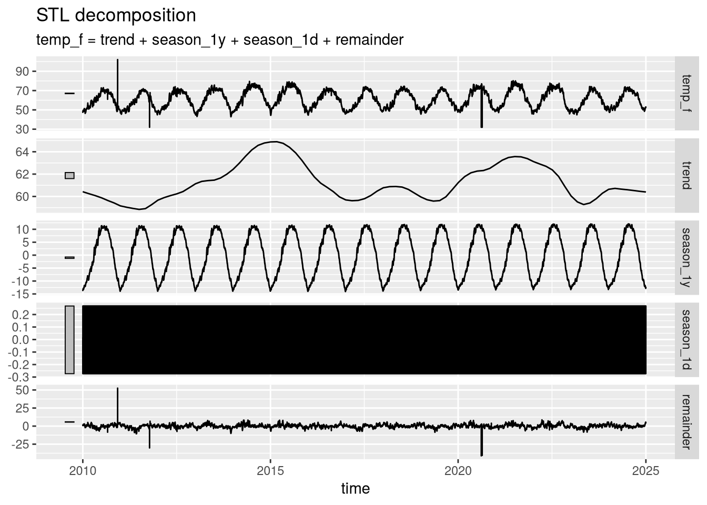
In Figure 11.10, the trend and 1-year seasonal components look about the same as with the previous model. The 1-day seasonal component looks like a black rectangle, again because it fluctuates over hours and the plot is on the scale of years. We can see the 1-day seasonal component better by focusing on a single week:
autoplot(stl_cmp, season_1d) +
xlim(lims)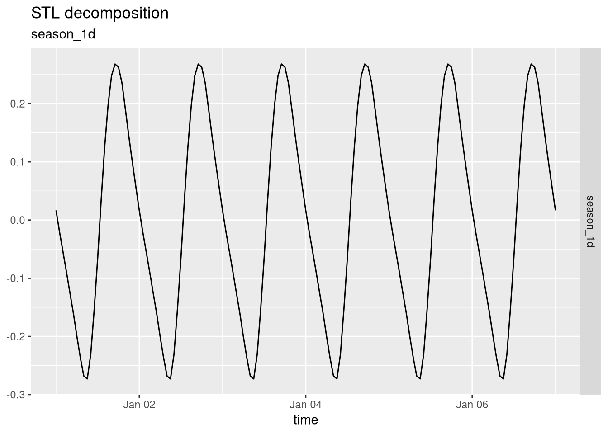
Figure 11.11 shows that starting from midnight each day, temperatures decrease until about 6 am, then increase until about 6 pm, then decrease again. The overall change in temperature is relatively small (less than 1°F).
There are several parameters that can be adjusted in the STL decomposition. The automatic decomposition we used here is not necessarily the best one.
To learn more about these parameters, see ?STL and Cleveland et al. (1990).
Throughout this section, we’ve assumed that decompositions are additive: adding up the trend, seasonal, and remainder components gives the original series.
For a positive time series where the variations increase and decrease with the level of the series, it often makes more sense to use a multiplicative decomposition. In this case, multiplying the components gives the original series.
One way to achieve a multiplicative decomposition is to take logarithms of the series before decomposition. There are also decomposition methods that are specifically multiplicative (or have both additive and multiplicative versions).
There are several other methods for decomposing time series, ranging from simple to extremely complicated. Time series decomposition is often of interest to government agencies, so many of the methods have been developed by statisticians working for the United States and other countries. To learn more about these, see the Time Series Decomposition chapter of Forecasting: Principles and Practice, 3rd edition (Hyndman and Athanasopoulos 2021).
One more statistic we can use (and visualize) to investigate a series is autocorrelation. Autocorrelation is the correlation (Section 5.2) between a time series and a time-lagged version of the same time series. For instance, lag-1 autocorrelation is the correlation between the series and the series lagged (shifted back) by 1 time step. As correlations, autocorrelations are bounded between -1 and 1, with 0 indicating no relationship and -1 or 1 indicating a strong negative or positive relationship.
In practical terms, large lag-1 autocorrelation means that we can effectively predict an observation with the previous observation. Large lag-2 autocorrelation means there’s useful predictive information 2 observations back, and so on.
The ACF function in the feasts package computes autocorrelations for a tsibble. The first two arguments are the time series and feature, respectively. We can optionally set the lag_max parameter to specify how many autocorrelations to compute.
Let’s compute autocorrelations for the Sacramento River Water Temperature series:
hood_acf = ACF(hood, temp_f, lag_max = 24*5)
head(hood_acf)# A tsibble: 6 x 2 [1h]
lag acf
<cf_lag> <dbl>
1 1h 0.999
2 2h 0.999
3 3h 0.998
4 4h 0.998
5 5h 0.998
6 6h 0.997We can use the autoplot function to make an autocorrelation plot, which shows lags on the x-axis and autocorrelations on the y-axis:
autoplot(hood_acf)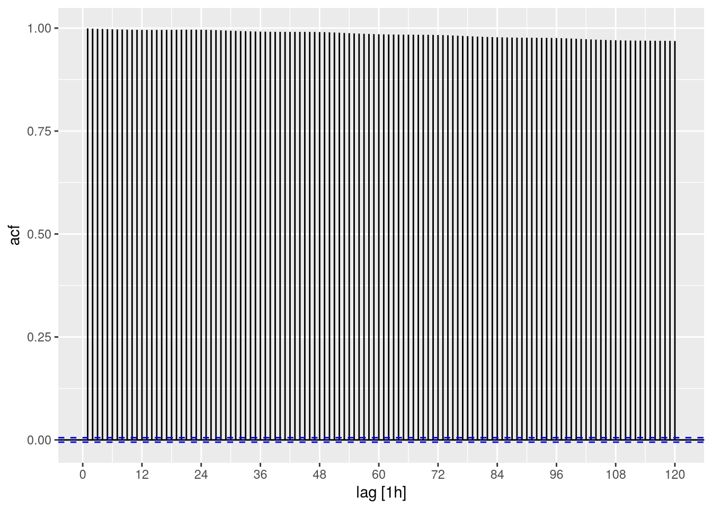
The autocorrelation plot shows two dashed horizontal lines at the upper and lower bounds for a significance test of zero autocorrelation. The test can be helpful for identifying which autocorrelations are likely to be zero. However, for a time series with a large number of observations, the bounds will be very close to zero, so even negligible autocorrelations will be considered statistically discernible. Thus it’s important to consider the actual autocorrelation value (the effect size) in addition to discernibility.
When a time series has a trend, the autocorrelations tend to be large at low lags and decrease slowly as the number of lags increases.
When a time series has seasonality, the largest autocorrelations tend to be at lags that are multiples of the seasonal period.
The autocorrelations for the Sacramento River Water Temperature series exhibit both patterns simultaneously, although Figure 11.12 only shows the trend pattern (try increasing the number of lags to see the seasonality pattern; remember that a year has approximately \(24 \times 365.25\) hours).
Autocorrelations alone don’t give us a complete picture of the correlation structure in time series.
To understand the problem, consider a series with just three observations: \(y_1, y_2, y_3\). If the lag-1 autocorrelation is large, then \(y_1\) is correlated with \(y_2\), and \(y_2\) is correlated with \(y_3\). When we examine the lag-2 autocorrelation, the correlation between \(y_1\) and \(y_3\), the observations might be correlated on their own, or they might be correlated because both are correlated with \(y_2\). In other words, lag-1 autocorrelation affects lag-2 autocorrelation, and for longer series, this problem applies to all autocorrelations.
To overcome the problem, we also examine partial autocorrelation, which is the autocorrelation after removing the effects of observations at intermediary lags.
In R, the PACF function in the feasts package computes partial autocorrelations for a tsibble. The syntax is the same as for the ACF function.
The partial autocorrelations for the Sacramento River Water Temperature series are:
hood_pacf = PACF(hood, temp_f, lag_max = 24*5)
head(hood_pacf)# A tsibble: 6 x 2 [1h]
lag pacf
<cf_lag> <dbl>
1 1h 0.999
2 2h 0.167
3 3h 0.0310
4 4h 0.125
5 5h 0.0323
6 6h 0.0136Once again we can use the autoplot function to make a partial autocorelation plot, which shows lags on the x-axis and partial autocorrelations on the y-axis:
autoplot(hood_pacf)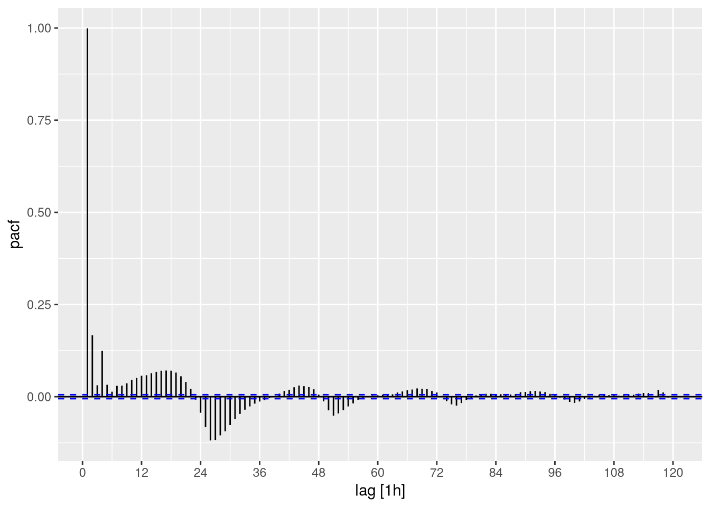
When a time series has seasonality, the partial autocorrelation tends to spike at the lag approximately equal to the seasonal period. Using partial autocorrelations to detect trend is difficult; use a plot of the series, a decomposition, or autocorrelations instead.
Figure 11.13 shows large partial autocorrelations at lag-1 and perhaps lag-2. All of the others shown are below 0.1.
A time series is stationary if the distribution at each time step doesn’t depend on the time. A series with trend or seasonality is never stationary. For instance, the Sacramento River Water Temperature series is clearly not stationary based on Figure 11.2 and Figure 11.10.
Visually, a stationary series displays no trend or seasonality, and the variance is constant (the fluctuations do not become noticeably smaller or larger over some time intervals). The [ARIMA Models][fpp-arima] chapter of Forecasting: Principles and Practices, 3rd edition (Hyndman and Athanasopoulos 2021) provides several plots of stationary and non-stationary time series.
For a stationary series, the autocorrelations either decrease to zero rapidly or are all close to zero. Because of this, we’ll often use autocorrelation plots to help us assess whether a series is stationary.
There are several hypothesis tests designed to test whether the autocorrelations for a series are (mostly) zero, as we’d expect of a stationary series. These are collectively known as portmanteau tests because they test many autocorrelations at once. The Ljung-Box test is one of the most widely-used portmanteau tests.
These tests tend to be highly sensitive to sample size, and will almost always reject (which indicates the series is non-stationary) for time series with many observations.
When we fit a forecasting model (Section 11.6), as a diagnostic we can check that the residuals (for predictions of the training data) are stationary. If they’re not, then the model fails to capture some of the patterns in the series and a better model may exist.
Some forecasting models (such as ARIMA; see Section 11.6) assume the time series being forecasted is stationary. There are a few things we can do to transform a non-stationary series into a stationary series.
If the variance is not constant, taking the logarithm or a power of the series will often stabilize it.
Logarithm and powe transformations are sometimes called Box-Cox transformations because they can be written in a more general form. There are automated methods to choose the best Box-Cox transformation for a series, although it’s still prudent to manually inspect the transformed series.
If a series has trend or seasonality, we have several options for forecasting. One approach is to decompose the series to remove the trend and seasonality, check that the remainder is stationary, and then forecast on the remainder. The remainder forecast can be combined with the trend and seasonal components to get a forecast for the series.
Let’s examine the remainder from the STL decomposition in Section 11.3.2 to check for stationarity. First, we’ll make a time versus feature plot. Figure 11.10 showed a few extreme values; we’ll remove those to make patterns easier to see:
autoplot(stl_cmp, remainder) +
scale_x_datetime(date_minor_breaks = "1 year") +
ylim(-10, 10) #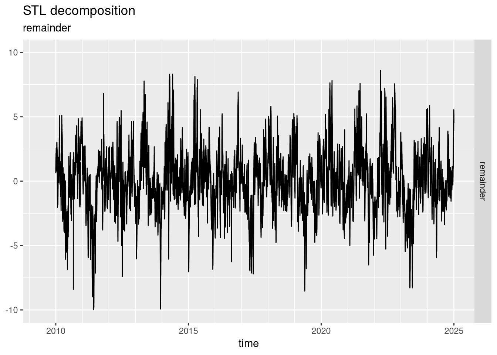
The remainder series appears to have (mostly) constant variance and no trend in Figure 11.14. Even with the extreme values removed, it’s difficult to tell from the figure whether there’s any seasonality.
Now let’s check the autocorrelation plot:
autoplot(ACF(stl_cmp, remainder, lag_max = 24*5))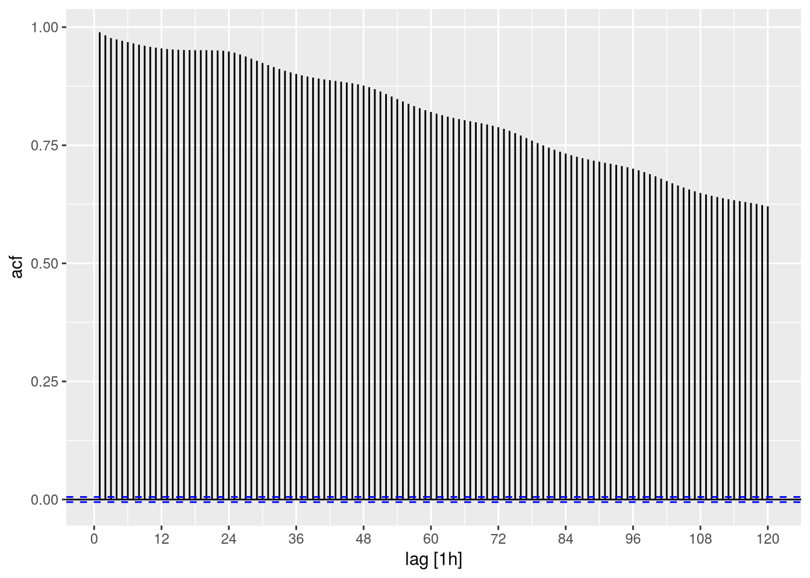
Figure 11.15 shows large autocorrelations at all of the lags in the plot. The remainder series is clearly not stationary. If we want to use it for forecasting, we’ll need to choose a method that doesn’t require a stationary series.
Another approach to forecasting a non-stationary series is to take differences. In particular, take the series and subtract (or divide by) a lagged copy of the series. Differencing at lag-1 works well for many series, although if we have more context about the series, we may want to use a different lag. For instance, differencing at lag equal to the seasonal period can help remove seasonality. Occasionally, we might need to difference a series several times to get something stationary. After taking differences, we can check for stationarity, and then forecast on the differences.
Let’s try taking differences of the remainder series from the STL decomposition of the Sacramento River Water Temperature series. We can use the tsibble package’s difference function to do so:
autoplot(ACF(stl_cmp, difference(remainder, 1), lag_max = 24*5))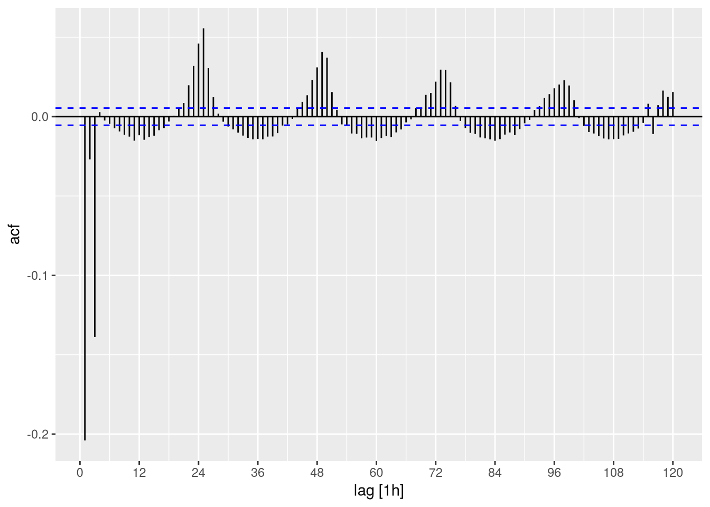
The autocorrelations for the differenced remainder series (Figure 11.16) are much smaller than the autocorrelations for the original remainder series (Figure 11.15). Almost all of the autocorrelations except the lag-1 and lag-3 are smaller than 0.05. The largest, at lag-1, is only about -0.2. Although the differenced remainder series isn’t a perfect example of a stationary series, it might be okay to use it with a forecasting model that requires stationarity. If we do, we can check that the residuals are approximately stationary; this is a more important diagnostic.
As with decomposition, there are many different methods for forecasting or predicting future values of a time series. This section introduces just a few of the most well-known methods.
There are also many different R packages for forecasting, as we hinted at in Section 11.1. See that section for links to comprehensive guides. In this section, we’ll mostly use the fable package to fit forecasting models. Like the feasts package (from Section 11.3.2), the fable package uses the generic model function to fit models. The package also uses the generic forecast function to generate forecasts from fitted models.
Forecasting models tend to be computationally demanding. Forecasting on a time series with a large number of observations sometimes requires a lot of time and memory. To ensure that the examples in this section will run on the average laptop, we’ll subset the Sacramento River Water Temperature series down to just the final two years (2023-2024). Instead of filtering the dataset directly, we’ll use the components tsibble from the STL decomposition (Section 11.3.2), since that contains the original data as well as the components, which we might use later:
hood23 = filter(stl_cmp, year(time) >= 2023)
# Remove the `.model` column, since it causes problems for downstream modeling:
hood23 = select(hood23, -.model)
head(hood23)# A tsibble: 6 x 7 [1h] <UTC>
time temp_f trend season_1d season_1y remainder season_adjust
<dttm> <dbl> <dbl> <dbl> <dbl> <dbl> <dbl>
1 2023-01-01 00:00:00 50.9 60.1 0.0166 -12.6 3.44 63.5
2 2023-01-01 01:00:00 50.9 60.1 -0.0203 -12.7 3.55 63.6
3 2023-01-01 02:00:00 51 60.1 -0.0547 -12.7 3.69 63.8
4 2023-01-01 03:00:00 51 60.1 -0.0893 -12.7 3.69 63.8
5 2023-01-01 04:00:00 51 60.1 -0.125 -12.7 3.72 63.8
6 2023-01-01 05:00:00 51 60.1 -0.160 -12.7 3.73 63.8There are several relatively simple methods for forecasting:
NAIVE model function.SNAIVE model function.MEAN model function.DRIFT model function.Let’s try forecasting for the Sacramento River Water Temperature series with the naive method. First, we fit the model with the model function:
library("fable")
naive_fit = model(hood23, naive = NAIVE(temp_f))Next, we forecast with the forecast function (see ?forecast.mdl_df for help). Use the h parameter to set the number of forecasts. In this case, we’ll forecast the next 3 days:
naive_fcst = forecast(naive_fit, h = 24*3)We can plot the forecasts with the autoplot function, adding an autolayer to also show the original series:
lims = tail(hood23$time, 1) + days(c(-29, 7))
autoplot(naive_fcst) +
autolayer(hood23, temp_f) +
xlim(lims)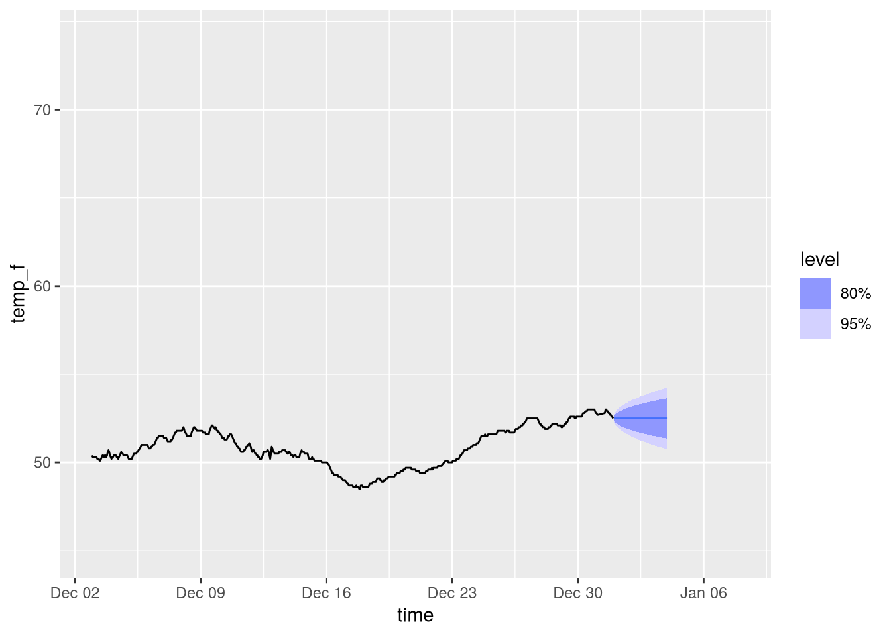
The forecasts (Figure 11.17) are automatically plotted with prediction intervals. Since we used the naive method, all of the forecasts are the same. The prediction intervals get wider at times farther into the future to indicate increasing uncertainty about the forecasts.
To extract the prediction intervals as numbers, use the hilo function. See ?forecast.mdl_df and ?hilo for more details.
As one more example, since this series exhibits strong seasonality, let’s forecast with the seasonal naive method. For this method, we must specify the length of the seasonal period with a model formula and the special lag function:
snaive_fit = model(hood23, snaive = SNAIVE(temp_f ~ lag("1y")))
snaive_fcst = forecast(snaive_fit, h = 24*3)
autoplot(snaive_fcst) +
autolayer(hood23, temp_f) +
xlim(lims)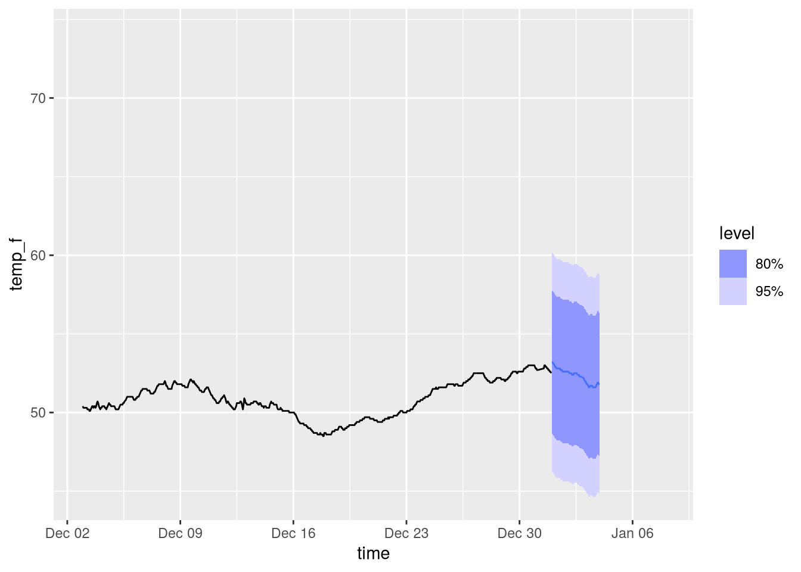
The forecasts in Figure 11.18 vary over time since the seasonal naive method takes observations from the previous season as forecasts. This is also why the prediction intervals have constant width and are wider than in Figure 11.17; the forecasts are not necessarily better closer to the most recent observation.
Although the methods described in this section are simple, they often work surprisingly well. They’re also easy to interpret. For series with strong seasonal components, these methods can be improved without much additional complexity by decomposing the series, forecasting on the remainder series, and then recombining the forecasts with the seasonal components.
Linear models are especially useful for forecasting time series when there are meaningful predictors available, as is often the case for multivariate time series. Regardless of whether the time series is multivariate, linear models can be effective at modeling simple trends and relatively complex seasonality.
In fable, the model function for a linear model is TSLM. The function requires a model formula (just like the lm function). The model formula can include several special functions, such as:
trend to include a linear time trend.season to include a categorical predictors for seasonality. The seasonal period must be specified. This creates one predictor for each time step (except the first) in the seasonal period, so it’s not recommended for long seasonal periods.fourier to include Fourier predictors for seasonality. The seasonal period must be specified, and the number of predictors can optionally be specified. Fourier predictors are sine and cosine functions of time; just a few Fourier predictors can approximate most seasonal patterns well. Fourier predictors are appropriate to use even for long seasonal periods.See ?common_xregs for a complete list of special functions.
Let’s fit a linear model to the Sacramento River Water Temperature series. We’ll include Fourier terms for 1-year and 1-day seasonality. Since linear models handle trend and seasonality reasonably well, we’ll forecast 1 year into the future:
tslm_fit = model(
hood23,
lm = TSLM(
temp_f ~ trend() + fourier(24*365, 5) + fourier(24, 3)
)
)
report(tslm_fit)Series: temp_f
Model: TSLM
Residuals:
Min 1Q Median 3Q Max
-4.591 -1.343 -0.138 1.312 5.526
Coefficients:
Estimate Std. Error t value Pr(>|t|)
(Intercept) 5.812e+01 3.040e-02 1912.293 < 2e-16 ***
trend() 2.003e-04 3.087e-06 64.869 < 2e-16 ***
fourier(24 * 365, 5)C1_8760 -8.789e+00 1.960e-02 -448.431 < 2e-16 ***
fourier(24 * 365, 5)S1_8760 -6.823e+00 2.124e-02 -321.144 < 2e-16 ***
fourier(24 * 365, 5)C2_8760 -1.668e-01 1.960e-02 -8.512 < 2e-16 ***
fourier(24 * 365, 5)S2_8760 8.863e-01 1.989e-02 44.548 < 2e-16 ***
fourier(24 * 365, 5)C3_8760 -6.117e-01 1.960e-02 -31.217 < 2e-16 ***
fourier(24 * 365, 5)S3_8760 4.197e-01 1.964e-02 21.371 < 2e-16 ***
fourier(24 * 365, 5)C4_8760 -2.500e-01 1.959e-02 -12.760 < 2e-16 ***
fourier(24 * 365, 5)S4_8760 8.294e-01 1.955e-02 42.427 < 2e-16 ***
fourier(24 * 365, 5)C5_8760 -2.122e-01 1.958e-02 -10.836 < 2e-16 ***
fourier(24 * 365, 5)S5_8760 7.601e-02 1.951e-02 3.895 9.85e-05 ***
fourier(24, 3)C1_24 9.091e-02 1.951e-02 4.660 3.19e-06 ***
fourier(24, 3)S1_24 -2.226e-01 1.951e-02 -11.408 < 2e-16 ***
fourier(24, 3)C2_24 -3.627e-02 1.951e-02 -1.859 0.06304 .
fourier(24, 3)S2_24 5.665e-02 1.951e-02 2.904 0.00369 **
fourier(24, 3)C3_24 4.052e-03 1.951e-02 0.208 0.83546
fourier(24, 3)S3_24 -8.793e-03 1.951e-02 -0.451 0.65223
---
Signif. codes: 0 '***' 0.001 '**' 0.01 '*' 0.05 '.' 0.1 ' ' 1
Residual standard error: 1.827 on 17526 degrees of freedom
Multiple R-squared: 0.952, Adjusted R-squared: 0.952
F-statistic: 2.045e+04 on 17 and 17526 DF, p-value: < 2.22e-16The fable package’s report function provides a summary of a model fitted with model (similar to the output from summary for a model fitted with lm).
tslm_fcst = forecast(tslm_fit, h = 24*365)
autoplot(tslm_fcst) +
autolayer(hood23, temp_f)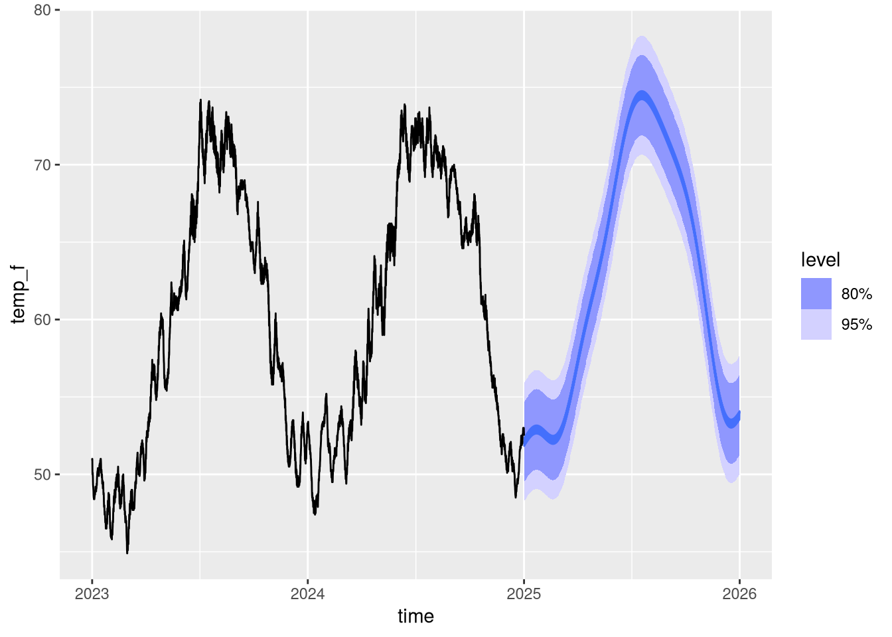
Figure 11.19 shows the forecasts and associated prediction intervals. For a linear model, the prediction intervals are estimated based on the variance of the residuals (this is true for any linear model, not just in the time series context).
An autoregressive integrated moving average model, or ARIMA model, is a combination of three simpler methods:
An autoregressive model, denoted AR(\(p\)) assumes each observation is a linear combination of the previous \(p\) observations and an error term.
The simplest AR model, denoted AR(1), uses only 1 previous observation. Mathematically, for an observation \(y_t\) and error term \(\epsilon_t\), the model is
\[ y_t = c + \phi_1 y_{t-1} + \epsilon_t \]
The model estimates the values of the coefficients \(c\) and \(\phi_1\).
Integrated (I) refers to differencing, which is built into ARIMA models. The order of differencing is denoted by \(d\).
A moving average model, denoted MA(\(q\)) assumes each observation is a linear combination of the previous \(q\) error terms and a new error term.
The simplest MA model, denoted MA(1), uses only 1 previous error term. Mathematically, for an observation \(y_t\) and error term \(\epsilon_t\), the model is
\[ y_t = c + \theta_1 \epsilon_{t-1} + \epsilon_t \]
The model estimates the values of the coefficients \(c\) and \(\theta_1\).
ARIMA models are denoted by ARIMA(\(p\), \(d\), \(q\)) to indicate the parameters for the three methods.
AR, MA, and ARIMA models all assume a stationary time series.
They will not necessarily work well for a series that isn’t stationary, and the estimated standard errors and prediction intervals will not be correct.
There is an extension of ARIMA for time series with seasonality (but not trend). The ARIMA model function (explained and demonstrated below) will automatically consider seasonal ARIMA models.
In fable, the model function for an ARIMA model is ARIMA. The function requires one argument: a feature to model or a model formula. With a model formula, we use the special pdq function to manually set the parameters \(p\), \(d\), and \(q\). When these are not specified, fable will automatically try to find the best settings by fitting and comparing multiple models.
Let’s try fitting an ARIMA model to the almost-stationary remainder component from the STL decomposition (Section 11.3.2) of the Sacramento River Water Temperature series. We’ll let fable select the best model automatically:
arima_fit = model(hood23, arima = ARIMA(remainder))
report(arima_fit)Series: remainder
Model: ARIMA(1,0,4)(1,1,0)[24]
Coefficients:
ar1 ma1 ma2 ma3 ma4 sar1
0.9894 -0.0177 0.0562 0.0373 0.0228 -0.4072
s.e. 0.0011 0.0077 0.0076 0.0073 0.0076 0.0070
sigma^2 estimated as 0.009309: log likelihood=16108.18
AIC=-32202.37 AICc=-32202.36 BIC=-32147.97In this case, the best model was an ARIMA(1, 0, 4) model with a seasonal ARIMA(1, 1, 0) model for a 24-hour seasonal period.
Let’s use the model to forecast 1 year into the future:
arima_fcst = forecast(arima_fit, h = 24*365)
autoplot(arima_fcst) +
autolayer(hood23, remainder)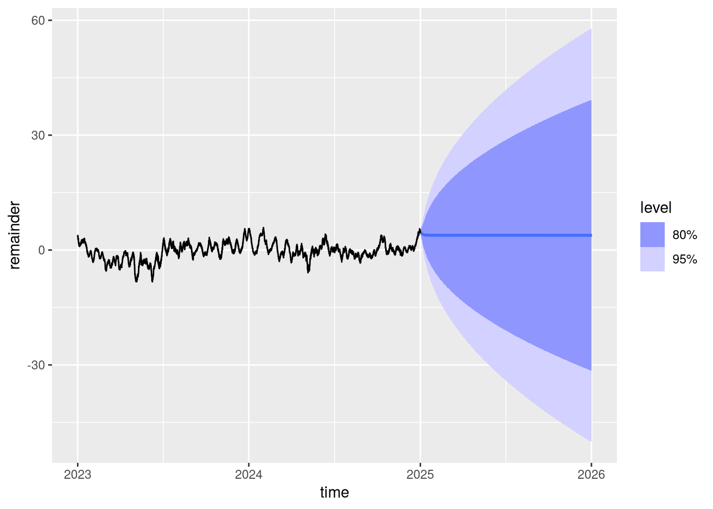
Judging from Figure 11.20, it seems like the ARIMA model doesn’t fit well. While the forecasts do fluctuate slightly, they don’t appear to be that much different from the naive method or the mean method, despite the much more complicated model. This may be due to the lack of stationarity in the remainder series.
For any model, examining the residuals is critical for determining how well the model fits and whether its assumptions are satisfied.
The resid function returns the residuals as a tsibble for an fable model.
The ggtime package’s gg_tsresiduals function makes diagnostic plots for a time series model. These include a time versus feature plot, autocorrelation plot, and histogram for the residuals.
When forecasting is the primary goal, estimates of forecast accuracy are usually the best way to compare models.
We can estimate forecast accuracy by partitioning the time series into a training series and a testing series. Use only the training series to fit models, then forecast on the testing series to evaluate the models. The simplest way to do this is to treat (approximately) the first 80% of the series as training and the remaining 20% as testing. There are other, more sophisticated ways to partition time series into training and testing series that address specific limitations of this simple approach.
There are many, many other kinds of decomposition and forecasting models!
The textbook Forecasting: Principles and Practice, 3rd Edition (Hyndman and Athanasopoulos 2021) is a good starting point for learning about more models. It also explains the statistics and algorithm fable uses to compare different ARIMA models.